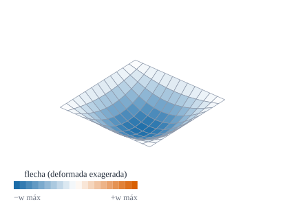
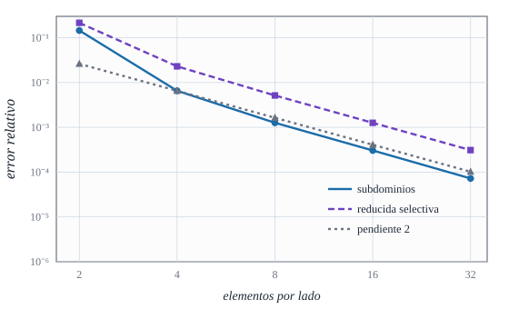
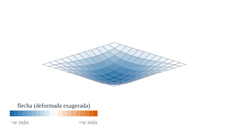

Patch test, solución de Navier, placa empotrada y placa oblicua: cuánto nos podemos fiar del elemento

Figura 31.1: Placa cuadrada simplemente apoyada con carga uniforme, resuelta con \(12\times12\) elementos de subdominios: deformada muy exagerada coloreada por la flecha. Cálculo calculado.
Cómo se demuestra que un elemento finito da la solución correcta, y no sólo un número que parece razonable
Objetivos y prerrequisitos
Objetivos. Al terminar el tema sabrás:
distinguir verificación (¿resuelvo bien las ecuaciones?) de validación (¿resuelvo las ecuaciones correctas?);
plantear y comprobar un patch test de membrana y de flexión;
comparar la flecha de una placa simplemente apoyada con la solución de Navier y medir el orden de convergencia;
reproducir la flecha de una placa empotrada y estudiar una placa oblicua;
carga uniforme por unidad de superficie y lado de la placa
\(\alpha=w_{\text{centro}}\,D/(qL^4)\)
coeficiente adimensional de la flecha central
\(n\)
elementos por lado de la malla
simplemente apoyada
apoyo «duro»: \(u_3=0\) y giro tangente nulo en el borde
NotaExplicación para ingenieros: el parche de tela y la balanza calibrada
Un patch test es como tirar uniformemente de un parche de tela cosido con distintos retales: si el tirón es uniforme, todos los retales deben estirarse por igual, da igual cómo estén cortados. Si el programa no consigue eso, tiene un error de base, y ninguna malla fina lo arreglará. La comparación con Navier es la balanza calibrada: se le pone al programa un caso del que se conoce la respuesta exacta y se ve si marca el peso correcto. Un programa que pasa las dos pruebas merece confianza en problemas parecidos, pero no en los muy distintos: por eso en los temas siguientes se repite con cilindros y con el paraboloide.
31.1 Verificar y validar
Verificación: comprobar que el programa resuelve correctamente el modelo matemático (sin errores de código, con la convergencia esperada). Se hace comparando con soluciones analíticas o con otras soluciones numéricas conocidas.
Validación: comprobar que el modelo describe la realidad (que la hipótesis de Reissner–Mindlin o la de Kirchhoff–Love es adecuada, que el material es el correcto). Se hace con experimentos.
Este libro, en los temas F1–F3, verifica. Para cada caso se da la referencia y su procedencia: analítica (se deduce y se calcula), de la literatura (con cita) o calculada con malla fina (sin referencia externa).
31.2 Patch test
Definición 31.1 (Patch test) Se toma un grupo («parche») de elementos de forma irregular y se imponen en el contorno los valores nodales de un campo de deformación constante (en membrana) o de curvatura constante (en flexión). El elemento supera el test si los nodos interiores y las deformaciones del interior reproducen exactamente ese campo.
Es una condición necesaria de convergencia (el elemento es consistente): si no reproduce estados constantes, al refinar no tiende a la solución. No es suficiente por sí sola (también hace falta estabilidad, es decir, no tener modos espurios, tema E5).
Ejemplo 31.1 (Ejemplo resuelto: campos del patch test) Sobre un parche de \(4\times4\) elementos rectangulares no uniformes en el plano paramétrico:
Flexión:\(w=\tfrac12\bigl(x^2+\tfrac12xy+\tfrac45y^2\bigr)\) con \(\varphi_\alpha=-w_{,\alpha}\): curvatura constante \(\kappa_{xx}=-1\), \(\kappa_{yy}=-0{,}8\), \(\kappa_{xy}=-0{,}25\) y cortante nulo.
Se fijan los nodos del borde a esos valores, se resuelve el parche sin carga y se mide la fuerza residual en los nodos interiores: \(\|\mathbf K\mathbf d\|_{\text{libres}}/\|\mathbf K\mathbf d\|_{\text{fijos}}\). Con la formulación de subdominios, el residuo es \(\sim10^{-9}\) (ruido de las derivadas numéricas de la geometría); con la de desplazamientos, \(\sim1\). Resultado calculado: lo reproduce la práctica de Julia.
Si un elemento pasa el patch test, queda garantizado que converge a la solución correcta al refinar la malla.
Falso. Pasar el patch test es condición necesaria (consistencia), pero hace falta además estabilidad (ausencia de modos espurios): existen elementos que lo pasan y no convergen.
AdvertenciaDos puntos que suelen confundir
El patch test no mide precisión, sólo comprueba que la formulación no tiene fallos de base. La precisión se mide con la convergencia (Sección 31.3).
El parche debe ser irregular. Con una malla uniforme y ordenada pasan el test elementos que fallan con mallas distorsionadas.
31.3 Placa simplemente apoyada: la solución de Navier
Una placa cuadrada de lado \(L\) con carga uniforme \(q\) y los cuatro bordes simplemente apoyados tiene, en la teoría de Kirchhoff, la solución en serie doble de senos:
El coeficiente \(\alpha\) se obtiene sumando la serie, que converge muy deprisa (\(\sim1/(mn)^5\)). Es un resultado analítico (calculado numéricamente: \(\alpha=0{,}004062\)).
Suma la serie ecuación 31.1 (basta \(m,n\le9\)) y da el coeficiente \(\alpha=w_{\text{centro}}D/(qL^4)\) de la placa cuadrada simplemente apoyada.
En el centro \(\sin\frac{m\pi}2\sin\frac{n\pi}2=\pm1\) con signo \((-1)^{(m+n)/2-1}\); el primer término (\(m=n=1\)) vale \(16/(\pi^6\cdot4)=0{,}00416\).
Suma de la serie con \(m,n\le9\) (impares): \(\alpha=0{,}004062\). El primer término ya da \(0{,}00416\) (2,4 % de error): la serie converge muy deprisa.
El elemento de este libro, con \(t/L=0{,}001\) y mallas de \(2,4,8,16\) y \(32\) elementos por lado, tiene un error de la flecha central que baja con pendiente \(2\) en escala logarítmica (Figura 31.2): es el orden esperado de un elemento bilineal. Con \(t/L=0{,}01\) la solución se estanca en \(+0{,}03\,\%\): es la deformación por cortante de Reissner–Mindlin, que Navier (Kirchhoff) no recoge.

Figura 31.2: Error relativo de la flecha central de la placa delgada (\(t/L=0{,}001\)) respecto de Navier. Los subdominios (azul) y la integración reducida selectiva (violeta) bajan con pendiente 2 (gris discontinuo). Cálculo calculado.
TipAplicación real: losas, forjados y huesos planos
ilustrativoObra civil. Una losa de forjado apoyada en todo su contorno y cargada de forma uniforme es, casi literalmente, el problema de Navier; los reglamentos y programas de cálculo de losas se contrastan con estas soluciones. Biomecánica. Los huesos planos (calota craneal, escápula) se idealizan a veces como placas o láminas delgadas con presión uniforme. Idea de aplicación sin fuente verificada: es una orientación, no una cita.
31.4 Placa empotrada
Con los cuatro bordes empotrados (\(u_3=\varphi_1=\varphi_2=0\)) la placa es más rígida. La solución de la teoría de placas para la placa cuadrada uniformemente cargada se da en tablas del tipo \(w_{\text{centro}}=\alpha\,qL^4/D\) con \(\alpha\approx0{,}00126\) (valor que se recuerda de la literatura clásica de placas (Timoshenko y Woinowsky-Krieger, s. f.); sin verificar en la edición). El elemento da \(\alpha=0{,}001267\) con \(24\times24\) elementos (Sección 31.7), coherente con ese valor.
31.5 Placa oblicua
Una placa oblicua (un paralelogramo) tiene un sistema de coordenadas no ortogonal: su métrica es \(a_{12}\ne0\) y las componentes covariantes de los desplazamientos no son las físicas. Es el caso que justifica todo el cálculo tensorial del libro. Con un ángulo de \(60^\circ\), simplemente apoyada y \(q=L=1\), los coeficientes \(\alpha\) de \(4,8,16\) y \(24\) elementos por lado son \(0{,}002354\), \(0{,}002485\), \(0{,}002530\) y \(0{,}002542\): la secuencia converge monótonamente a \(\alpha\approx0{,}0025\), algo más de la mitad que la cuadrada.

Figura 31.3: Placa oblicua de \(60^\circ\) simplemente apoyada con carga uniforme (\(12\times12\) elementos): deformada exagerada, coloreada por la flecha. Cálculo calculado; los elementos son rectángulos del plano paramétrico, paralelogramos en la placa.
AdvertenciaSin referencia externa verificada
Para la placa oblicua no se ha verificado ningún valor de la literatura (el caso de referencia habitual, por ejemplo con un ángulo de \(30^\circ\), no se ha podido contrastar). Lo que se afirma aquí es convergencia con la malla y plausibilidad física (menor flecha que la cuadrada). Calculado, sin comparación externa.
31.6 Un poco de historia
NotaUn poco de historia: Navier, Lévy y el patch test
La ecuación de la placa fue obtenida por Lagrange en 1811 al corregir el trabajo de Sophie Germain. Navier resolvió después la placa simplemente apoyada con una serie trigonométrica doble (las fuentes dan 1820 o 1823), y Lévy (1899, según la fuente más citada) propuso una serie simple para placas con dos bordes opuestos apoyados. El patch test nació en los años sesenta con el grupo de Bruce Irons: Bazeley, Cheung, Irons y Zienkiewicz (1966) lo emplearon para placas triangulares, e Irons y Razzaque (1972) lo describieron con detalle; más tarde se demostró que es necesario, pero no suficiente, para la convergencia (Stummel dio contraejemplos en 1980).
calculado (1) El patch test mixto del Ejemplo 31.1 con las dos formulaciones, para la placa cuadrada y la oblicua. (2) La convergencia frente a Navier (\(t/L=0{,}001\)). (3) Los coeficientes de la placa empotrada y de la oblicua.
usingGeometria, LinearAlgebrafunctionresiduo_patch(geom, modo) L =1.0; E, ν, t =1.0e4, 0.3, 0.01 xs = [0, 0.18, 0.5, 0.62, 1.0]; ys = [0, 0.3, 0.41, 0.8, 1.0] # malla no uniforme nodos =hcat([[x, y] for y in ys for x in xs]...); id(i, j) = (j -1) *5+ i conn =hcat([[id(i, j), id(i +1, j), id(i +1, j +1), id(i, j +1)] for j in1:4 for i in1:4]...) K, _, _ =ensamblar(geom, nodos, conn, E, ν, t; modo)ufun(p) = [1e-3* p[1] +5e-4* p[2], -3e-4* p[1] +8e-4* p[2], 0.0]wf(p) =0.5* (p[1]^2+0.5* p[1] * p[2] +0.8* p[2]^2)gw(p) = [p[1] +0.25* p[2], 0.25* p[1] +0.8* p[2], 0.0] nn =size(nodos, 2); d =zeros(5nn); fij =Int[]for k in1:nn θ = nodos[:, k]; g =geometria_punto(geom, θ); p =geom(θ) d[gdl(k, 1):gdl(k, 2)] = g.A'*ufun(p) # uα = u·aα (componentes covariantes) d[gdl(k, 3)] =wf(p) d[gdl(k, 4):gdl(k, 5)] =-(g.A'*gw(p)) # φα = −w,α (Kirchhoff: cortante nulo) x, y = θ (x ≈0|| x ≈ L || y ≈0|| y ≈ L) &&append!(fij, gdl(k, 1):gdl(k, 5))end lib =setdiff(1:5nn, fij); res = K * dnorm(res[lib]) /norm(res[fij])end[(placa = nombre, subdominios =residuo_patch(g, :subdominios), desplazamientos =residuo_patch(g, :desplazamientos)) for (nombre, g) in (("cuadrada", placa_oblicua(π/2)), ("oblicua 60°", placa_oblicua(π/3)))]
# Empotrada y oblicua (t/L = 0.01): coeficientes α = w·D/(q L⁴)t =0.01; D =1.0e4* t^3/ (12* (1-0.3^2))(α_empotrada = [placa(n, t, :subdominios; empotrada =true) * D for n in (8, 16, 24)], α_oblicua_60 = [placa(n, t, :subdominios; geom =placa_oblicua(π/3)) * D for n in (4, 8, 16, 24)])
Orden de convergencia. Si el error pasa de \(6{,}1\cdot10^{-3}\) (\(n=4\)) a \(8{,}3\cdot10^{-4}\) (\(n=8\)), ¿qué orden se observa?
NotaSolución
\(\log_2(6{,}1\cdot10^{-3}/8{,}3\cdot10^{-4})=\log_2(7{,}35)\approx2{,}9\): algo por encima de 2 (régimen preasintótico). Con mallas más finas se estabiliza cerca de 2.
Estancamiento. ¿Por qué con \(t/L=0{,}01\) el error frente a Navier se estanca en \(+0{,}03\,\%\) y no sigue bajando?
NotaSolución
Porque el elemento (Reissner–Mindlin) incluye la deformación por cortante y Navier (Kirchhoff) no: la solución exacta de Reissner–Mindlin es algo mayor, y el elemento converge a ésa. El efecto crece como \((t/L)^2\) y desaparece al adelgazar la placa.
Diseñar un patch test. ¿Qué campo se impondría para comprobar el cortante?
NotaSolución
Un giro constante\(\varphi_1=\bar\varphi\) con \(w=-\bar\varphi\,x\) (inclinación rígida): \(\gamma_1=\varphi_1+w_{,1}=0\) y curvatura nula; basta que el parche lo reproduzca sin esfuerzos. Para cortante constante no nulo, \(w=\bar\gamma x\) con \(\varphi_1=0\).
La doy por superada si…
Distingo verificar de validar y digo cuál de las dos hace este tema.
Planteo el patch test de membrana y de flexión y sé qué prueba y qué no.
Calculo la flecha de Navier y el coeficiente \(0{,}00406\).
Mido el orden de convergencia a partir de dos mallas.
Reconozco que la placa oblicua no tiene referencia verificada y qué se afirma sobre ella.
NotaFuentes, correcciones y qué queda pendiente
Fuentes. Texto autónomo; la solución de Navier y los coeficientes de placas son clásicos (Timoshenko y Woinowsky-Krieger, s. f.) (datos editoriales sin verificar); el patch test, en (Bathe 1996; Hughes 1987; Zienkiewicz y Taylor, s. f.). El coeficiente de Navier y los de la placa empotrada y oblicua son calculados; el de la empotrada no se ha contrastado con la tabla original.
Qué queda pendiente. Referencia verificada de la placa oblicua (por ejemplo, el caso de \(30^\circ\)) y de la empotrada; momentos flectores (sólo se estudia la flecha); la nota histórica y la «Aplicación real» usan fuentes secundarias o ninguna; figuras con revisión visual pendiente.
Zienkiewicz, O. C., y R. L. Taylor. s. f. The Finite Element Method. Butterworth-Heinemann.
Hughes, T. J. R. 1987. The Finite Element Method: Linear Static and Dynamic Finite Element Analysis. Prentice-Hall.
Bathe, K. J. 1996. Finite Element Procedures. Prentice Hall.
Timoshenko, S. P., y S. Woinowsky-Krieger. s. f. Theory of Plates and Shells. McGraw-Hill.
Referencias
Son las mismas que aparecen en el margen, junto al texto.
Bathe, K. J. 1996. Finite Element Procedures. Prentice Hall.
Hughes, T. J. R. 1987. The Finite Element Method: Linear Static and Dynamic Finite Element Analysis. Prentice-Hall.
Timoshenko, S. P., y S. Woinowsky-Krieger. s. f. Theory of Plates and Shells. McGraw-Hill.
Zienkiewicz, O. C., y R. L. Taylor. s. f. The Finite Element Method. Butterworth-Heinemann.